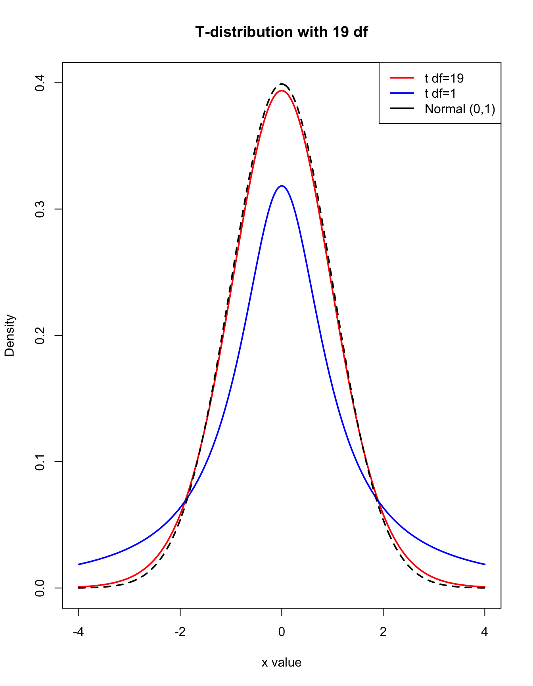

Lecture 8: Confidence Intervals and Hypothesis Testing
BIOS 600 - Summer Session II 2026
Announcements
HW 7 is due tonight at 11:59 PM
HW 8 will be due tomorrow at 11:59 PM
Overview
Using a t-distribution vs. a z-distribution to create confidence intervals
qt()functionHypothesis tests: how to conduct them, how to interpret them
Readings
P & G: Chapter 9, Chapter 10.1 - 10.4
OpenIntro: 5.3
Another Example of Interpreting a CI
A study estimates the mean systolic blood pressure of adults with diabetes as 132 mmHg, with a 95% confidence interval of [128, 136]
Tip
How would you interpret this confidence interval?
CI interpretation
Is this interpretation correct?
“There is a 95% chance that the true mean SBP lies in the interval”
This is incorrect!
Important: we do not know whether any particular interval is in the 95% of them that cover the mean or the 5% that don’t
Since \(\mu\) is a parameter, it’s either in our confidence interval or not
CI interpretation
Let’s say I know 54% of the population of NC is going to vote for Candidate A, and two polls of 400 individuals are done. One poll estimates 50% with a 95% CI of (0.45, 0.55) and a second poll estimates 60% with a 95% CI of (0.55, 0.65)
The true proportion voting for Candidate A does not change it is either included or not included in each interval - there isn’t a chance of this being in either interval
But. . . if I did this poll many many times, constructing a 95% confidence interval each time in the same way, then about 95% of those intervals would contain the true proportion of the population voting for candidate A
When can we use this CI?
\[(\bar X - z^* \frac{\sigma}{\sqrt n}, \bar X + z^* \frac{\sigma}{\sqrt n})\]
Remember, this is only ok to use when \(\sigma\) is known, and:
- \(X\) is normal
- \(X\) is non-normal, but \(n\) is sufficiently large
What can we do if \(\sigma\) isn’t known?
As a Guiness brewery employee, William Sealy Gossett published a paper on the \(t\) distribution, which became known as Student’s \(t\) (the brewery didn’t allow him to use his own name)
A. Student. The probable error of a mean (1908)
Student’s \(t\) distribution
Gosset used his new distribution to determine how large a sample should be for testing beer
The \(t\) distribution is appropriate for constructing a confidence interval for the mean when \(\sigma\) is unknown
Student’s \(t\) distribution
The \(t\) distribution looks like the normal distribution except it has thicker tails, leading to wider CIs
This is due to the uncertainty involved in estimating \(\sigma\) by using \(s\) (the standard deviation of the sample)
As the sample size increases, \(s\) is a better and better estimate of \(\sigma\), and so the \(t\) distribution looks more and more like the normal distribution

Degrees of freedom
- The degrees of freedom of a \(t\) distribution tells us how much information is “available” for estimating \(\sigma\) using \(s\). The random variable
\[t = \frac{\bar X - \mu}{s/ \sqrt{n}}\]
has a \(t\) distribution with \(n-1\) degrees of freedom (\(df\)), which we denote by \(t_{n-1}\) (we lose one \(df\) by estimating the sample mean using \(\bar X\)).
The \(t\) distribution only has one parameter (\(df\))
How does this compare to the standard normal distribution?
Two-sided interval with unknown \(\sigma\)
- When we do not know \(\sigma\) (which is pretty much always), we can use the following interval:
\[(\bar X - t^*_{n-1; 1-\alpha/2} \frac{s}{\sqrt n}, \bar X + t^*_{n-1; 1-\alpha/2} \frac{s}{\sqrt n})\]
In practice, if \(\sigma\) is unknown, we use the t-distribution no matter the sample size.
For very large \(n\), the difference between t and z disappears, so either works — but conventionally we stick with t.
Finding critical values for t-distribution
For the \(t^*\) distribution
R provides two functions:
pt()→ cumulative probability (area to the left)qt()→ quantile function (finds cutoff given probability)
These are analogous to
pnorm()andqnorm(), but instead of a mean and sd, you put the degrees of freedom in the parentheses
Example code
Suppose we want a 95% confidence interval with \(n = 20\) observations:
alpha <- 0.05
n <- 20
# degrees of freedom
df <- n - 1
# t critical value
t_crit <- qt(1 - alpha/2, df = df)
t_crit[1] 2.093024- This is the cutoff value such that 95% of the \(t_{19}\) distribution lies between \(-t\) and \(+t\).
\(t\) critical values

Two-sided interval with unknown \(\sigma\)
- For n = 20 and \(\alpha=0.05\), \(t^*_{n-1; 1-\alpha/2}=t^*_{19; 1-\alpha/2}=2.09\)
\[(\bar X - 2.09 \frac{s}{\sqrt n}, \bar X + 2.09 \frac{s}{\sqrt n})\]
- How does this compare to confidence multiplier of \(z^*_{1-\alpha/2}\)?
What about one-sided intervals?
The symmetric two-sided confidence intervals we have dealt with so far give the shortest intervals with the desired coverage probability (for symmetric distributions)
Occasionally, we may only want an upper limit or a lower limit for the population mean, for instance in a non-inferiority clinical trial for a generic drug (we don’t expect the generic drug to work better, but we do expect it to be “not worse”)
We won’t focus on these in this class.
Remember IQ example?
IQ tests have a distribution with \(\mu\) = 100 and known \(\sigma\) = 15
For a random sample of \(n = 30\), BIOS 600 students, the sample average IQ score is 120
The central limit theorem tells us that the distribution of means of samples of size 30 from this population is also normal, with mean \(\mu = 100\) and \(SE = \sigma/ \sqrt{n} = 15 \sqrt{30} \approx 2.7\)
Remember IQ example?
- Remember here I know \(\sigma\), I can derive 95% confidence interval for the BIOS 600 students’ average IQ
alpha <- 0.05
qnorm(1-(alpha/2), mean = 0, sd = 1)[1] 1.959964\[(120 - 1.96 *\frac{15}{\sqrt 30}, 120 + 1.96 * \frac{15}{\sqrt 30}) = (114.6, 125.4)\]
- I am 95% confident the true mean IQ for Bios 600 students falls between 114.6 and 125.4
Let’s say I don’t know sigma
- Let’s say for a random sample of \(n = 30\), BIOS 600 students, the sample average IQ score is 120 with sample standard deviation of 15. I can still derive 95% confidence interval for the BIOS 600 students average IQ using the t-distribution:
alpha <- 0.05
n <- 30
# degrees of freedom
df <- n - 1
# t critical value
t_crit <- qt(1 - alpha/2, df = df)
t_crit[1] 2.04523Remember IQ example?
- I have 95% confidence that the true mean IQ for BIOS 600 students is between 114.4 and 125.6
\[(120 - 2.045 *\frac{15}{\sqrt 30}, 120 + 2.045 * \frac{15}{\sqrt 30}) = (114.4, 125.6)\]
Remember IQ example?
Let’s go back to knowing \(\sigma\), what if I want to test whether BIOS 600 students are smarter than average?
\(Z = \frac{\bar{X} - \mu}{SE}\) is a standard normal random variable
\(Z \approx 7.3\)
How can we answer research questions using statistics?
- Statistical hypothesis testing is the procedure that assesses evidence provided by the data in favor of or against some claim about the population (often about a population parameter or potential associations).
The hypothesis testing framework
Start with two hypotheses about the population: the null hypothesis and the alternative hypothesis
Choose a sample, collect data, and analyze the data
Figure out how likely it is to see data like what we got/observed, if the null hypothesis were true
If our data would have been extremely unlikely if the null claim were true, then we reject it and deem the alternative claim worthy of further study. Otherwise, we cannot reject the null claim
Example: Ultra-low dose contraception
Oral contraceptive pills work well, but must have a precise dose of estrogen.
If a pill has too high a dose, then people may risk side effects such as headaches, nausea, and rare but potentially fatal blood clots
If a pill has too low a dose, pregnancy may occur
Ultra-low dose contraception
A certain contraceptive pill is supposed to contain precisely 0.020 \(\mu g\) of estrogen.
During quality control, 50 randomly selected pills are tested, with a sample mean dose 0.017 \(\mu g\) and sample SD 0.008 \(\mu g\).
CautionQuestion
Do you think this is cause for concern? Why or why not?
Two competing hypotheses
The null hypothesis (\(H_0\)) states that “nothing unusual is happening” / there is no change from status quo / there is no relationship / etc.
The alternative hypothesis (\(H_A\) or \(H_1\)) states the opposite: that there is some sort of relationship (usually this is what we want to check or really think is happening)
Remember, in statistical hypothesis testing we always first assume the null hypothesis is true, and see whether we reject or fail to reject this claim.
Defining the null and alternative hypotheses
Stated in words:
\(H_0\): The pills are consistent with a population that has a mean of 0.020 \(\mu\)g estrogen
\(H_1\): The pills are not consistent with a population that has a mean of 0.020 \(\mu\)g estrogen
Stated in symbols (using LaTeX):
$H_0$: $\mu = 0.020$ renders to —> \(H_0\): \(\mu\) = 0.020
$H_1$: $\mu \neq 0.020$ renders to —> \(H_1\): \(\mu \neq\) 0.020
where \(\mu\) is the mean estrogen level of the manufactured pills, in \(\mu\)g.
Collecting and summarizing the data
With these two hypotheses, we now take a sample and summarize the data
The choice of summary statistic calculated depends on the type of data as well as its distribution.
In our example, quality control technicians randomly selected a sample of 50 pills and calculated the sample mean \(\bar{x}\) = 0.017 \(\mu\)g and sample standard deviation \(s\) = 0.008 \(\mu\)g.
Collecting the data in R
- (For purposes of this example, we’ve simulated the data with the desired sample size, mean, and sd)
df |>
slice(1:5) sample_data
1 0.01251619
2 0.01515858
3 0.02946967
4 0.01756407
5 0.01803430Assessing the evidence observed
Next, we calculate the probability of getting data like ours, or more extreme, if \(H_0\) were actually true.
This is a conditional probability: “if \(H_0\) were true (i.e., if \(\mu\) were truly 0.020), what would be the probability of observing \(\bar{x}\) = 0.017 and \(s\) = 0.008?
This probability is the p-value.
P(observing \(\bar{x}\) = 0.017 and \(s\) = 0.008 | \(H_0\) were true)
Perform one-sample t-test against mu = 0.020
t.test(df$sample_data, mu = 0.020)
One Sample t-test
data: df$sample_data
t = -2.6012, df = 49, p-value = 0.01225
alternative hypothesis: true mean is not equal to 0.02
95 percent confidence interval:
0.01517019 0.01938026
sample estimates:
mean of x
0.01727523 - Where does -2.6012 come from?
Two-sided tests of hypotheses
- To conduct the hypothesis test, we use what we learned about the sampling distribution of the sample mean \(\bar{X}\). If the underlying population is normally distributed (or \(n\) is pretty large), then the random variable
\[t = \frac{\bar{X}-\mu_0}{s/\sqrt{n}}\]
has a \(t_{n-1}\) distribution.
Breaking down the test statistic
\[t = \frac{\bar{X}-\mu_0}{s/\sqrt{n}}\]
- \(\bar{X} - \mu_0\) tells us how far our sample mean is from the hypothesized population mean
Thus, the test statistic \(t\) is an estimate of how many SDs apart \(\mu_0\) and \(\bar{X}\) are from each other
- Let’s calculate our test statistic using the above formula:
Breaking down the test statistic
We have \(\bar{X} = 0.017\), \(\mu_0 = 0.020\), \(s = 0.008\), and \(n = 50\).
Then \[t = \frac{0.017 - 0.020}{0.008/\sqrt{50}}\]
This is equal to -2.65165
Slightly different from before, but that’s because for our simulated data, the mean isn’t exactly 0.017 and the standard deviation isn’t exactly 0.008
Example: Conclusion
If the true average estrogen level really were 0.020 \(\mu\)g, the chance of seeing data this far off just by random luck is about 1 in 100. (P-value = .01225)
Since that’s very unlikely, we have good evidence the pills’ average estrogen level is not actually 0.020 \(\mu\)g.
Conclusion: At an alpha level of 0.05, we calculated a p-value of 0.012, which is less than 0.05. There is statistically significant evidence that the mean estrogen level of the manufactured pills is different than 0.020 \(\mu\)g.
In other words: the pills are probably being made with a slightly different average amount of estrogen than intended.
Getting the p-value graphically (drawing)
Breaking down the test statistic
The pt function is similar to pnorm
Probability our observation is the left of 2.6012 is:
pt(2.6012, df=49)[1] 0.9938754- Probability we observe something as high as 2.6012 or something more extreme
p_high <- 1-pt(2.6012, df=49)
p_high[1] 0.0061246352*p_high[1] 0.01224927Reflection

Reflection

Reflection

But wait…
What if \(p \geq \alpha\)?
We never “accept” the null hypothesis – we assumed that \(H_0\) was true to begin with and assessed the probability of obtaining our test statistic (or more extreme) under this assumption
When we fail to reject the null hypothesis, we are stating that there is insufficient evidence to assert that it is false
Back to IQ example
Here a sample of 30 students with IQs on average of 120 points. Can we test if the average IQ score for BIOS 600 students is the same as that in the larger population?
\(H_0\) = The average IQ score for BIOS 600 students is 100 points.
# One-sample t-test (greater than 100)
t.test(bios600, mu = 100)
One Sample t-test
data: bios600
t = 7.1812, df = 29, p-value = 6.631e-08
alternative hypothesis: true mean is not equal to 100
95 percent confidence interval:
113.7986 124.7883
sample estimates:
mean of x
119.2934 Back to IQ example
- Here I’ve generated a sample of 30 students with IQs on average ~ 105 points
# One-sample t-test (greater than 100)
t.test(bios600, mu = 100)
One Sample t-test
data: bios600
t = 1.5981, df = 29, p-value = 0.1209
alternative hypothesis: true mean is not equal to 100
95 percent confidence interval:
98.7986 109.7883
sample estimates:
mean of x
104.2934 Some philosophical details
The obtained p-value relates to the specific test itself, so use of the same data can result in different p-values or confidence intervals depending on which test is used.
Importantly, we have assumed from the start that the null hypothesis is true, and the p-value calculated conditioned on that event.
Caution
- p-values do NOT provide information on the probability that the null hypothesis is true given our observed data.
Making a conclusion
We reject the null hypothesis if the conditional probability of obtaining our test statistic, or more extreme, given it is true, is very small
What is “very small”? We often consider a cutpoint (the significance level or \(\alpha\) level) defined prior to conducting the analysis
Many analyses use \(\alpha = 0.05\): if \(H_0\) were in fact true, we would expect to make the wrong decision only 5% of the time (why?)
If the p-value is less than \(\alpha\), we say the results are statistically significant and we reject the null hypothesis. On the other hand, if the p−value is \(\alpha\) or greater, we say the results are not statistically significant and fail to reject \(H_0\).
What could go wrong?
- Suppose we test the null hypothesis \(H_0\):\(\mu = \mu_0\). We could potentially make two types of errors:
| Truth | \(\mu = \mu_0\) | \(\mu \neq \mu_0\) |
|---|---|---|
| Fail to reject \(H_0\) | correct decision | Type II Error |
| Reject \(H_0\) | Type I Error | correct decision |
Type I Error: rejecting \(H_0\) when it is actually true (falsely rejecting the null hypothesis)
Type II Error: not rejecting \(H_0\) when it is false (falsely failing to reject the null hypothesis)
Type I vs. Type II errors


Type I vs. Type II errors
Example: HIV Tests
\(H_0\): The patient does not have HIV.
Type 1 error: Test is positive when the person does not have HIV (false positive).
consequence: Unnecessary stress, stigma, follow-up testing, but not life-threatening if corrected later.
Type II Error: test is negative when person does have HIV (false negative)
Consequence: very serious, patient does not get life-saving treatment, risk of transmission to others.
Therefore, we may design a test to minimize type II error (catch as many true cases as possible), even if that increases false positives?
How about pregnancy tests?
Type I vs. Type II errors
Example: Pregnancy Tests
\(H_0\): The person is not pregnant.
Type I error: The pregnancy test is positive when the person is not pregnant.
Type II erorr: The pregnancy test is negative when the person is pregnant.
Different sets of hypotheses
We set up the hypotheses to cover all possibilities for \(\mu\) and consider three possibilities:
Two-sided: \(H_0\):\(μ=μ_0\); \(H_1\):\(μ\neq μ_0\)
\(H_0\):\(μ≥μ_0\); \(H_1\):\(μ<μ_0\)
\(H_0\):\(μ\leq μ_0\); \(H_1\):\(μ > μ_0\)
Different types of hypotheses
Let’s go back to the IQ example
Are BIOS 600 students smarter than average?
- \(H_0\) = The average IQ of BIOS 600 students is equal to 100 points.
- \(H_A\) = The average IQ of BIOS 600 students is greater than 100 points.
Are BIOS 600 students IQs different than the average?
- \(H_0\) = The average IQ of BIOS 600 students is equal to 100 points.
- \(H_A\) = The average IQ of BIOS 600 students is not equal to 100 points.
Why not use a one-sided test?

Why not use a one-sided test?
In this study, researchers tested whether anti-arrhythmic drugs (like encainide and flecainide) reduced mortality and morbidity among patients with arrhythmias following a heart attack.
While the initial hypothesis may have been that these drugs would help reduce mortality (a one-sided hypothesis), the study actually found the opposite: the drugs increased mortality rates significantly, leading to the early termination of the trial.
Why a two-sided test is important
Unexpected Adverse Effects: In biomedical research, especially in clinical trials, it’s crucial to remain open to the possibility of unexpected results. If the researchers had used a one-sided test, assuming only that the drugs could be beneficial, they might have missed the possibility that the drugs could cause harm. A two-sided test accounts for both the potential benefit and harm, ensuring a more balanced and rigorous assessment of treatment effects.
Ethical considerations: Since the primary concern in clinical trials is patient safety, it’s critical to detect any harmful effects early. A one-sided hypothesis test only tests for improvement, which could delay recognizing adverse outcomes—potentially leading to increased patient harm, as seen in the CAST trial.
Recap
Using a t-distribution vs. a z-distribution to create confidence intervals
qt()functionHypothesis tests: how to conduct them, how to interpret them
Type 1 and Type 2 error
Why a two-sided test (vs. one-sided) is important
Next Class
- Comparing two means